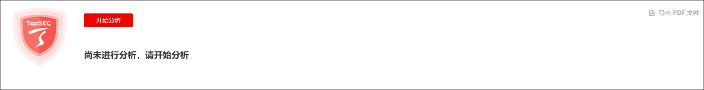
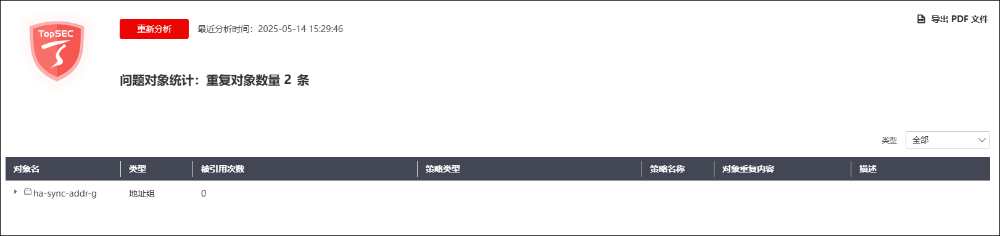
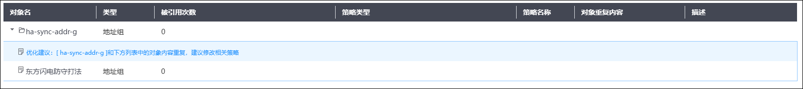

NGFW内置重复对象分析模块，可以对已配置的部分资源项（地址、地址组、服务、服务组、时间、时间组）进行重复性检测，查找并展示资源配置中的重复冗余项。
NGFW重复对象分析模块的工作原理如下：
·依赖资源管理模块：重复对象分析仅对地址、时间和服务和对应的资源组进行分析；
·依赖访问控制模块：重复的资源对象需要在访问控制里引用之后才能被分析为重复对象；但若是地址、地址组或者时间内容为空时，不必引用就可以分析出来。
选择 ，界面如下图所示。

点击【开始分析】，系统即会开始进行资源对象分析，分析完成的结果界面如下图所示。

点击对象名前的“”，即可展开重复对象的详细冲突信息和修改建议，如下图所示。

界面右上角的下拉框可以筛选展示的重复对象资源种类，点击“导出PDF文件”，可以导出最近一次的.pdf格式分析结果报告。